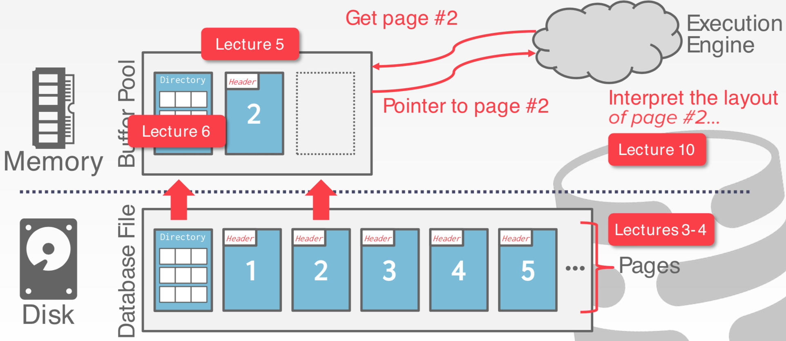
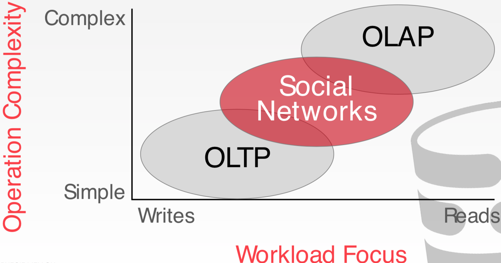

数据库存储（II）
基于磁盘的数据库系统

元组存储
元组本质上是字节序列，DBMS 负责将这些字节解释为类型和值。
DBMS 的系统表包含了关于表的模式信息，系统用来找出元组的布局。
数据表示
- INTEGER/BIGINT/SMALLINT/TINYINT: C/C++表示
- FLOAT/REAL vs. NUMERIC/DECIMAL: IEEE-754标准/定点小数
- VARCHAR/VARBINARY/TEXT/BLOB: 带有长度的头部，紧跟数据字节
- TIME/DATE/TIMESTAMP: 从 UNIX时间以来的 32/64bit整数秒（微妙）
变精度数字
大值
大部分 DBMS 不允许一个元组超过单个页的大小。为了保存大于一页的值，DBMS 使用了分离存储页：Postgres 使用 TOAST（>2KB）；MySQL使用Overflow（>½页大小）
外部值存储
一些系统允许保存非常大的值在外部文件中，作为 BLOB 类型。
Oracle 使用 BFILE 数据类型；Microsoft 使用 FILESTREAM数据类型。
DBMS 不能操作外部文件的内容。没有持久性保护，没有事务保护。
系统表
DBMS 保存数据库的元数据在内部的系统表中。
- 表，列，索引，视图
- 用户，权限
- 内部统计信息
几乎每个 DBMS 都是自己存储数据库的系统表。
- 在元组周围包装对象抽象
- “bootstrapping”目录表的专用代码
可以查询 DBMS 内部 INFORMATION_SCHEMA 系统表获取数据库信息。
- 提供信息的ANSI标准只读视图集 关于数据库中的所有表，视图，列和过程
DBMS 还有非标准的快捷方式获取这些信息。
访问表的模式
查找当前数据中的所有表：
- SQL-92: SELECT * FROM INFORMATION_SCHEMA.TABLES WHERE table_catalog = '
'; - Postgres: \d;
- MySQL: SHOW TABLES;
- SQLite: .tables;
查找 student 表的所有列：
- SQL-92: SELECT * FROM INFORMATION_SCHEMA.TABLES WHERE table_name = 'student';
- Postgres: \d student;
- MySQL: DESCRIBE student;
- SQLite: .schema student;
评论：关系模型没有指定必须在一个单页内存储元组的属性。对于某些工作负载，这实际上可能不是最佳布局......
维基百科例子
CREATE TABLE useracct (
userID INT PRIMARY KEY,
userName VARCHAR UNIQUE,
⋮
);
CREATE TABLE pages (
pageID INT PRIMARY KEY,
title VARCHAR UNIQUE,
latest INT
REFERENCES revisions (revID),
);
CREATE TABLE revisions (
revID INT PRIMARY KEY,
userID INT REFERENCES useracct (userID),
pageID INT REFERENCES pages (pageID),
content TEXT,
updated DATETIME
);
OLTP
在线事务处理：单条查询读取/更新少量的数据。这通常人们首先构建的一种应用。
SELECT P.*, R.*
FROM pages AS P
INNER JOIN revisions AS R ON P.latest = R.revID
WHERE P.pageID = ?
UPDATE useracct
SET lastLogin = NOW(),
hostname = ?
WHERE userID = ?
INSERT INTO revisions VALUES (?,?...,?)
OLAP
在线分析处理：复杂查询。
SELECT COUNT(U.lastLogin),
EXTRACT(month FROM
U.lastLogin) AS month
FROM useracct AS U
WHERE U.hostname LIKE '%.gov'
GROUP BY
EXTRACT(month FROM U.lastLogin)
负载特征

数据存储模型
DBMS 以不同的方式保存元组以更好地适应 OLTP 或 OLAP 负载。
我们假设都是 n-元 存储模式（也称之为行存储）。
行存储模型
DBMS 将所有的属性值保存在页面内的单个连续的元组中。
对 OLTP 负载是理想的存储方式：查询仅仅对各个实体操作，插入很频繁。
优势：插入、更新、删除很快；对需要访问整个元组的查询友好。
劣势：对列很多，或者访问列很少的查询，存在大量的无效数据访问。
列存储模型
......
优势：减少无效 I/O，DBMS 仅读取需要的数据；更好的查询处理和数据压缩。
劣势：点查询、插入、更新和删除较慢，因为元组被拆分了。
列存系统历史
- 1970s: Cantor DBMS
- 1980s: DSM Proposal
- 1990s: SybaseIQ (in-memory only)
- 2000s: Vertica, VectorWise, MonetDB
- 2010s: Everyone
结论
存储管理器与 DBMS 不是完全独立的。
对于不同的负载选择合适的存储模型很重要。